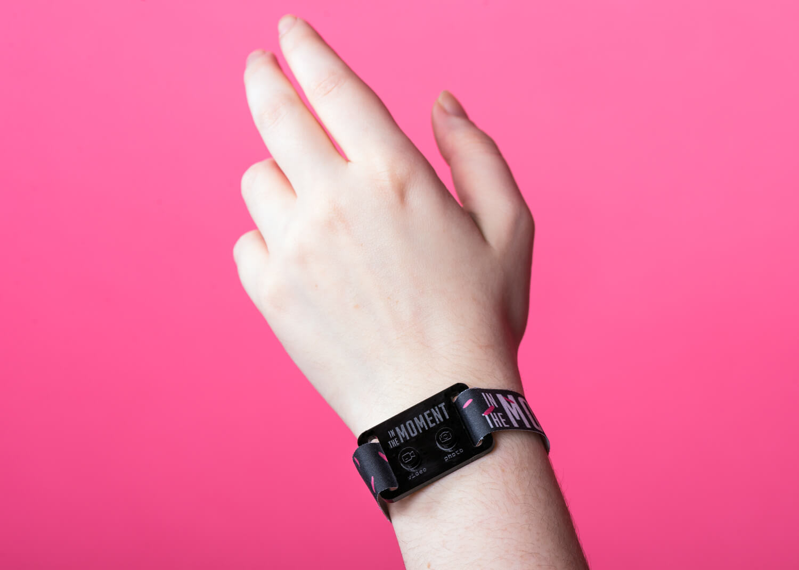
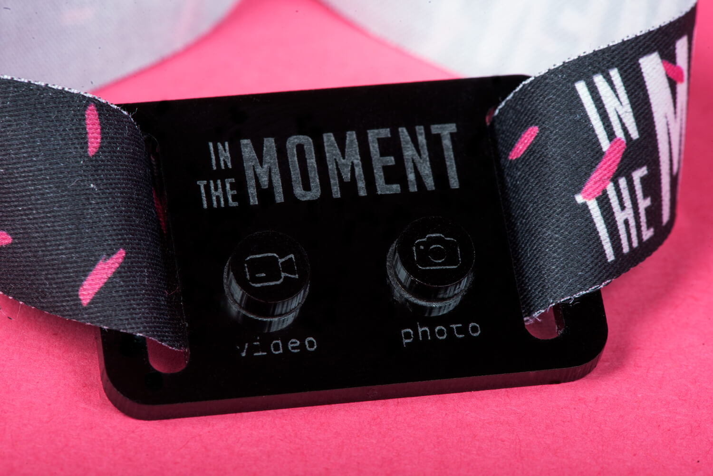
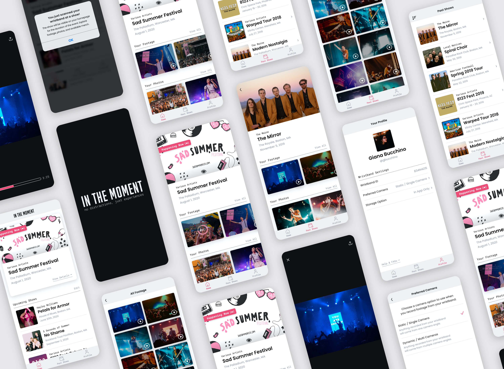
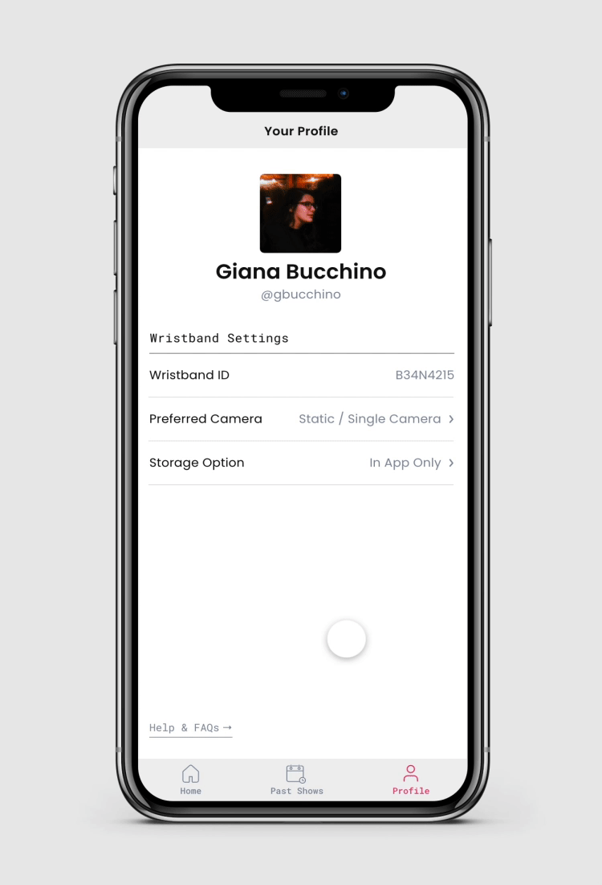
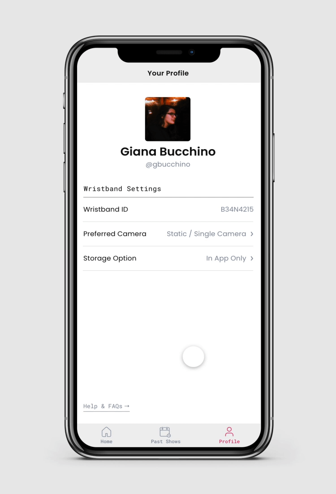

Note: This is a personal project
ADDITIONAL CREDITS
Maxwell Labelle, photography
PROJECT DELIVERABLES
- product design
- mobile app
- process book
LEARN MORE
process bookin the moment
PRODUCT DESIGN, MOBILE APP
Have you ever been at a concert and found yourself distracted by the sea of phones in the air? Each and every person in front of you is holding their phone high to record the show that they could just be watching with their own eyes. This is not to say that I myself am not guilty of taking photos and videos during concerts. It is actually very likely that someone would catch me recording a song or taking too many photos. People desire to save the experience for later, but there’s a major annoyance that comes from this, especially when it goes on for too long. It’s a distraction, and most will present the argument that we need to “live in the moment and put our devices away.”
But should we be forced to stop saving these memories? Is there any way to diminish the annoyance that comes from documentation? In an effort to solve this issue, In The Moment plans to help concert goers enjoy the show without distractions. With one simple product, their goal is to aid the concert experience by solving the once annoying situations that resulted from phone use.
 About the Product
The product includes the device as well as an interchangeable fabric band. Using RFID technology, the wristband can function as your ticket and potential payment. The wristbands can also connect directly to the In the Moment app on your phone via bluetooth.
There are two buttons on each device. One to record video and one to take photos. Hitting the button once to “record” video tells the wristband to begin grabbing footage from existing cameras within the venue. Once you press the button a second time to stop recording, the footage will be sent directly to the app on your phone. Whenever available, footage can also be delivered from photographers or videographers at the show.
The Companion Mobile App
To dive a little deeper into the mobile app that connects to your wristband, think of it as a relationship similar to snapchat and their snap spectacles. Your In the Moment wristband is here to make recording easy, but the app is here to store all of your memories. It’s going to act as your own personal scrapbook of shows and events you have attended. While you may only use your wristband at a show, the app is here to benefit you even after the show has ended.


Your homescreen will always show any upcoming shows you have registered through your wristband. If a show is currently in progress, it will be highlighted at the top of the screen.
During the show, you can view details to find live updates of any footage or photos that are captured from your wristband. You can also discover added benefits, like customizing how footage is collected or shopping available merchandise.
 

After a show is said and done, your content won’t disappear. It will always be right within the app for you to go back and relive your memories.
To read more about the research behind In the Moment, check out the process book.